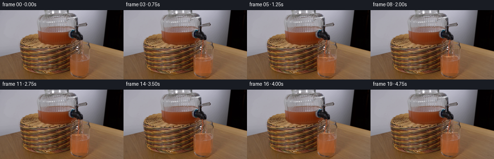
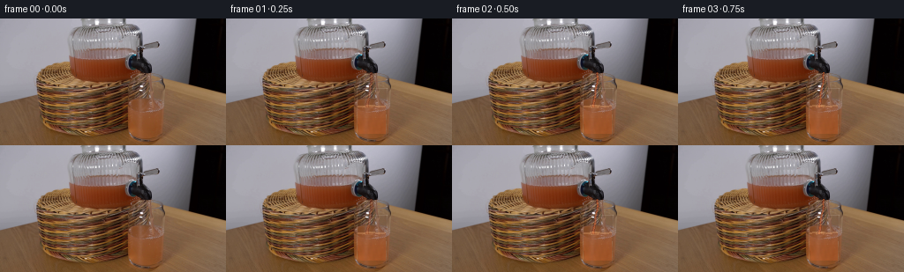

CODING AGENTS AS PIXEL WORLD MODELS
traex/DeepSeek-V4.1-Flash · 0070
点击播放 · 原生 RGB 像素
逐轮保存的候选
回放视频、检查图与代码变化。
每份候选均可单独播放。实际图片检查记录在下方工具轨迹中。
候选 01播放与检查图
点击播放 · 原生 RGB 像素


展开代码变化
--- 上一保存版本
+++ 本次保存版本
@@ -0,0 +1,204 @@
+from pathlib import Path
+
+import cv2
+import numpy as np
+from PIL import Image
+
+from artifact_io import save
+
+
+CASE_DIR = Path(__file__).resolve().parent
+WIDTH, HEIGHT = 256, 144
+N_FRAMES = 20
+FPS = 4
+
+
+def smoothstep(value):
+ value = np.clip(value, 0.0, 1.0)
+ return value * value * (3.0 - 2.0 * value)
+
+
+def glass_masks():
+ yy, xx = np.mgrid[:HEIGHT, :WIDTH]
+ # The receiving glass has a nearly straight silhouette. Slight taper and
+ # rounded corners keep the tint from spilling onto its highlights.
+ left = 147.2 + 0.012 * (yy - 78)
+ right = 182.4 - 0.018 * (yy - 78)
+ body = (
+ (yy >= 79)
+ & (yy <= 132)
+ & (xx >= left)
+ & (xx <= right)
+ )
+ interior = (
+ (yy >= 80)
+ & (yy <= 130)
+ & (xx >= left + 1.3)
+ & (xx <= right - 1.3)
+ )
+ return body, interior, left, right
+
+
+def soft_ellipse_distance(xx, yy, cx, cy, rx, ry):
+ return np.sqrt(((xx - cx) / rx) ** 2 + ((yy - cy) / ry) ** 2)
+
+
+def add_stream(frame, surface_y, phase, strength):
+ """Composite a narrow falling juice ribbon and its impact ripples."""
+ yy, xx = np.mgrid[:HEIGHT, :WIDTH]
+ start_y = 62.0
+ end_y = float(surface_y) + 0.8
+ t = np.clip((yy - start_y) / (end_y - start_y), 0.0, 1.0)
+
+ # A tiny bend makes the pour read as liquid rather than a painted stripe.
+ center = (
+ 164.0
+ - 3.4 * t
+ + 0.85 * np.sin(t * np.pi * 1.35 + phase * 0.35)
+ + 0.35 * np.sin(t * np.pi * 4.1 - phase * 0.55)
+ )
+ width = 1.35 + 0.55 * t + 0.22 * np.sin(phase * 0.8 + t * 6.0)
+ distance = np.abs(xx - center)
+ along = (yy >= start_y - 1.0) & (yy <= end_y + 0.6)
+ ribbon = along & (distance <= width)
+ core = along & (distance <= np.maximum(0.55, width * 0.38))
+
+ # Small brightness packets move down the stream at the 4 fps cadence.
+ packets = 0.5 + 0.5 * np.sin((yy - start_y) * 1.9 - phase * 2.35)
+ edge_alpha = (1.0 - np.clip(distance / np.maximum(width, 0.8), 0.0, 1.0)) * strength
+
+ rgb = frame.astype(np.float32)
+ stream_color = np.array([214.0, 103.0, 52.0], dtype=np.float32)
+ edge_color = np.array([129.0, 43.0, 21.0], dtype=np.float32)
+ shade = (0.82 + 0.12 * packets)[..., None]
+ stream_target = stream_color[None, None, :] * shade
+ edge_target = edge_color[None, None, :]
+
+ edge_region = ribbon & ~core
+ if edge_region.any():
+ alpha = (0.34 + 0.18 * edge_alpha)[edge_region, None]
+ rgb[edge_region] = rgb[edge_region] * (1.0 - alpha) + edge_target * alpha
+ if core.any():
+ alpha = (0.56 + 0.20 * packets[core])[:, None] * strength
+ rgb[core] = rgb[core] * (1.0 - alpha) + stream_target[core] * alpha
+
+ # A broken white glint near the left side of the ribbon.
+ glint = (
+ along
+ & (distance > 0.55)
+ & (distance < 1.15)
+ & (np.sin((yy - start_y) * 1.2 - phase * 2.0) > 0.56)
+ )
+ if glint.any():
+ alpha = 0.26 * strength
+ rgb[glint] = rgb[glint] * (1.0 - alpha) + np.array([248.0, 198.0, 151.0]) * alpha
+
+ # Impact: a small bright crown and two low-opacity rings.
+ cx = 160.9
+ cy = end_y
+ crown = (
+ (soft_ellipse_distance(xx, yy, cx, cy, 5.4 + 0.6 * np.sin(phase), 2.0) < 1.0)
+ & (yy <= cy + 1.3)
+ )
+ if crown.any():
+ crown_alpha = 0.22 * strength
+ rgb[crown] = rgb[crown] * (1.0 - crown_alpha) + np.array([246.0, 174.0, 109.0]) * crown_alpha
+
+ for ring_index in range(2):
+ radius = 4.0 + 2.2 * ring_index + 0.55 * np.sin(phase * 0.7 + ring_index)
+ ring_distance = np.abs(soft_ellipse_distance(xx, yy, cx, cy + 0.8, radius, 1.25) - 1.0)
+ ring = ring_distance < (0.095 - 0.015 * ring_index)
+ if ring.any():
+ alpha = (0.18 - 0.055 * ring_index) * strength
+ rgb[ring] = rgb[ring] * (1.0 - alpha) + np.array([250.0, 205.0, 157.0]) * alpha
+
+ return np.clip(rgb, 0.0, 255.0).astype(np.uint8)
+
+
+def make_frame(base, body, interior, left, right, frame_index):
+ if frame_index == 0:
+ return base.copy()
+
+ yy, xx = np.mgrid[:HEIGHT, :WIDTH]
+ progress = smoothstep((frame_index - 1) / (N_FRAMES - 2))
+ surface_y = 99.0 - 10.2 * progress
+ phase = frame_index * 1.15
+ strength = min(1.0, frame_index / 2.0)
+
+ frame = base.astype(np.float32)
+
+ # Tint the existing transparent liquid rather than replacing the glass.
+ below = interior & (yy >= surface_y)
+ if below.any():
+ depth = np.clip((yy - surface_y) / 31.0, 0.0, 1.0)
+ juice = np.array([205.0, 103.0, 52.0], dtype=np.float32)
+ alpha = (0.16 + 0.18 * depth)[..., None]
+ frame[below] = frame[below] * (1.0 - alpha[below]) + juice[None, :] * alpha[below]
+
+ # A gently advected brightness field suggests suspended pulp and flow.
+ texture = (
+ 0.52 * np.sin(xx * 0.73 + yy * 0.21 + phase * 0.36)
+ + 0.31 * np.sin(xx * 1.37 - yy * 0.33 - phase * 0.24)
+ + 0.17 * np.cos(xx * 0.29 + yy * 1.18 + phase * 0.17)
+ )
+ texture = cv2.GaussianBlur(texture.astype(np.float32), (0, 0), 0.72)
+ modulation = (0.012 + 0.020 * depth) * texture
+ frame[below] *= (1.0 + modulation[below, None])
+
+ # Warmer, denser grapefruit tone near the bottom.
+ bottom = below & (yy > 112)
+ if bottom.any():
+ alpha = 0.07
+ frame[bottom] = frame[bottom] * (1.0 - alpha) + np.array([151.0, 62.0, 24.0]) * alpha
+
+ # Liquid meniscus: a slightly bowed surface plus a bright reflected line.
+ surface_curve = surface_y + 0.72 * np.sin((xx - 148.0) * 0.28 + phase * 0.45)
+ surface_band = interior & (np.abs(yy - surface_curve) < 1.0)
+ if surface_band.any():
+ alpha = 0.24
+ frame[surface_band] = (
+ frame[surface_band] * (1.0 - alpha)
+ + np.array([247.0, 192.0, 133.0]) * alpha
+ )
+
+ # Keep the glass readable by restoring narrow side highlights and a pale rim.
+ glass_edges = body & (
+ (np.abs(xx - left) < 0.85)
+ | (np.abs(xx - right) < 0.85)
+ )
+ if glass_edges.any():
+ edge_alpha = 0.10 + 0.05 * np.sin(yy[glass_edges] * 0.42 - phase * 0.22)
+ frame[glass_edges] = (
+ frame[glass_edges] * (1.0 - edge_alpha[:, None])
+ + np.array([242.0, 232.0, 218.0]) * edge_alpha[:, None]
+ )
+
+ rim = body & (yy >= 78.0) & (yy <= 79.8)
+ if rim.any():
+ alpha = 0.11
+ frame[rim] = frame[rim] * (1.0 - alpha) + np.array([247.0, 240.0, 230.0]) * alpha
+
+ frame = np.clip(frame, 0.0, 255.0).astype(np.uint8)
+ return add_stream(frame, surface_y, phase, strength)
+
+
+def main():
+ base = np.asarray(Image.open(CASE_DIR / "first_frame.png").convert("RGB"), dtype=np.uint8)
+ assert base.shape == (HEIGHT, WIDTH, 3)
+
+ body, interior, left, right = glass_masks()
+ frames = np.stack(
+ [
+ make_frame(base, body, interior, left, right, frame_index)
+ for frame_index in range(N_FRAMES)
+ ]
+ )
+ assert np.array_equal(frames[0], base)
+ assert frames.shape == (N_FRAMES, HEIGHT, WIDTH, 3)
+ assert frames.dtype == np.uint8
+
+ save(frames, CASE_DIR)
+
+
+if __name__ == "__main__":
+ main()
候选 02播放与检查图
点击播放 · 原生 RGB 像素

展开代码变化
--- 上一保存版本
+++ 本次保存版本
@@ -20,19 +20,19 @@
def glass_masks():
yy, xx = np.mgrid[:HEIGHT, :WIDTH]
- # The receiving glass has a nearly straight silhouette. Slight taper and
- # rounded corners keep the tint from spilling onto its highlights.
- left = 147.2 + 0.012 * (yy - 78)
- right = 182.4 - 0.018 * (yy - 78)
+ # The receiving glass begins below the dispenser nozzle. Its sides are
+ # nearly vertical, with only a small perspective taper.
+ left = 145.1 - 0.025 * (yy - 91)
+ right = 184.0 + 0.018 * (yy - 91)
body = (
- (yy >= 79)
+ (yy >= 90)
& (yy <= 132)
& (xx >= left)
& (xx <= right)
)
interior = (
- (yy >= 80)
- & (yy <= 130)
+ (yy >= 91)
+ & (yy <= 131)
& (xx >= left + 1.3)
& (xx <= right - 1.3)
)
@@ -46,18 +46,18 @@
def add_stream(frame, surface_y, phase, strength):
"""Composite a narrow falling juice ribbon and its impact ripples."""
yy, xx = np.mgrid[:HEIGHT, :WIDTH]
- start_y = 62.0
+ start_y = 80.8
end_y = float(surface_y) + 0.8
t = np.clip((yy - start_y) / (end_y - start_y), 0.0, 1.0)
# A tiny bend makes the pour read as liquid rather than a painted stripe.
center = (
- 164.0
- - 3.4 * t
- + 0.85 * np.sin(t * np.pi * 1.35 + phase * 0.35)
- + 0.35 * np.sin(t * np.pi * 4.1 - phase * 0.55)
- )
- width = 1.35 + 0.55 * t + 0.22 * np.sin(phase * 0.8 + t * 6.0)
+ 160.2
+ - 1.15 * t
+ + 0.52 * np.sin(t * np.pi * 1.35 + phase * 0.35)
+ + 0.20 * np.sin(t * np.pi * 4.1 - phase * 0.55)
+ )
+ width = 1.08 + 0.35 * t + 0.13 * np.sin(phase * 0.8 + t * 6.0)
distance = np.abs(xx - center)
along = (yy >= start_y - 1.0) & (yy <= end_y + 0.6)
ribbon = along & (distance <= width)
@@ -68,18 +68,18 @@
edge_alpha = (1.0 - np.clip(distance / np.maximum(width, 0.8), 0.0, 1.0)) * strength
rgb = frame.astype(np.float32)
- stream_color = np.array([214.0, 103.0, 52.0], dtype=np.float32)
- edge_color = np.array([129.0, 43.0, 21.0], dtype=np.float32)
+ stream_color = np.array([220.0, 94.0, 69.0], dtype=np.float32)
+ edge_color = np.array([132.0, 39.0, 29.0], dtype=np.float32)
shade = (0.82 + 0.12 * packets)[..., None]
stream_target = stream_color[None, None, :] * shade
edge_target = edge_color[None, None, :]
edge_region = ribbon & ~core
if edge_region.any():
- alpha = (0.34 + 0.18 * edge_alpha)[edge_region, None]
+ alpha = (0.31 + 0.18 * edge_alpha)[edge_region, None]
rgb[edge_region] = rgb[edge_region] * (1.0 - alpha) + edge_target * alpha
if core.any():
- alpha = (0.56 + 0.20 * packets[core])[:, None] * strength
+ alpha = (0.48 + 0.20 * packets[core])[:, None] * strength
rgb[core] = rgb[core] * (1.0 - alpha) + stream_target[core] * alpha
# A broken white glint near the left side of the ribbon.
@@ -94,7 +94,7 @@
rgb[glint] = rgb[glint] * (1.0 - alpha) + np.array([248.0, 198.0, 151.0]) * alpha
# Impact: a small bright crown and two low-opacity rings.
- cx = 160.9
+ cx = 159.2
cy = end_y
crown = (
(soft_ellipse_distance(xx, yy, cx, cy, 5.4 + 0.6 * np.sin(phase), 2.0) < 1.0)
@@ -121,7 +121,7 @@
yy, xx = np.mgrid[:HEIGHT, :WIDTH]
progress = smoothstep((frame_index - 1) / (N_FRAMES - 2))
- surface_y = 99.0 - 10.2 * progress
+ surface_y = 105.6 - 11.2 * progress
phase = frame_index * 1.15
strength = min(1.0, frame_index / 2.0)
@@ -130,9 +130,9 @@
# Tint the existing transparent liquid rather than replacing the glass.
below = interior & (yy >= surface_y)
if below.any():
- depth = np.clip((yy - surface_y) / 31.0, 0.0, 1.0)
- juice = np.array([205.0, 103.0, 52.0], dtype=np.float32)
- alpha = (0.16 + 0.18 * depth)[..., None]
+ depth = np.clip((yy - surface_y) / 26.0, 0.0, 1.0)
+ juice = np.array([217.0, 91.0, 66.0], dtype=np.float32)
+ alpha = (0.045 + 0.12 * progress + 0.13 * depth)[..., None]
frame[below] = frame[below] * (1.0 - alpha[below]) + juice[None, :] * alpha[below]
# A gently advected brightness field suggests suspended pulp and flow.
@@ -142,17 +142,17 @@
+ 0.17 * np.cos(xx * 0.29 + yy * 1.18 + phase * 0.17)
)
texture = cv2.GaussianBlur(texture.astype(np.float32), (0, 0), 0.72)
- modulation = (0.012 + 0.020 * depth) * texture
+ modulation = (0.010 + 0.017 * depth) * texture
frame[below] *= (1.0 + modulation[below, None])
# Warmer, denser grapefruit tone near the bottom.
bottom = below & (yy > 112)
if bottom.any():
- alpha = 0.07
- frame[bottom] = frame[bottom] * (1.0 - alpha) + np.array([151.0, 62.0, 24.0]) * alpha
+ alpha = 0.045 + 0.025 * progress
+ frame[bottom] = frame[bottom] * (1.0 - alpha) + np.array([166.0, 67.0, 42.0]) * alpha
# Liquid meniscus: a slightly bowed surface plus a bright reflected line.
- surface_curve = surface_y + 0.72 * np.sin((xx - 148.0) * 0.28 + phase * 0.45)
+ surface_curve = surface_y + 0.58 * np.sin((xx - 146.0) * 0.30 + phase * 0.45)
surface_band = interior & (np.abs(yy - surface_curve) < 1.0)
if surface_band.any():
alpha = 0.24
@@ -173,9 +173,10 @@
+ np.array([242.0, 232.0, 218.0]) * edge_alpha[:, None]
)
- rim = body & (yy >= 78.0) & (yy <= 79.8)
+ rim_curve = 90.8 + 0.62 * (1.0 - ((xx - 164.5) / 20.2) ** 2)
+ rim = body & (np.abs(yy - rim_curve) < 0.75)
if rim.any():
- alpha = 0.11
+ alpha = 0.085
frame[rim] = frame[rim] * (1.0 - alpha) + np.array([247.0, 240.0, 230.0]) * alpha
frame = np.clip(frame, 0.0, 255.0).astype(np.uint8)
候选 03播放与检查图
可观测工具轨迹
实际执行的命令与返回图片。
命令 1exit 0
/bin/bash -c "pwd && rg --files -g 'prompt.txt' -g 'GENERATION_RULES.md' -g 'first_frame.png' -g '"'!node_modules'"'"
命令 2exit 0
/bin/bash -c 'ls -la'
命令 3exit 0
/bin/bash -c 'cat prompt.txt'
命令 4exit 0
/bin/bash -c 'cat GENERATION_RULES.md'
命令 5exit 0
/bin/bash -c "sed -n '1,240p' artifact_io.py && sed -n '1,220p' player_template.html"
命令 6exit 127
/bin/bash -c "file first_frame.png && python3 - <<'PY'
from PIL import Image
im=Image.open('first_frame.png')
print(im.size, im.mode)
print(im.getextrema())
PY"命令 7exit 0
/bin/bash -c "python3 - <<'PY'
from PIL import Image
import numpy as np
im=np.array(Image.open('first_frame.png').convert('RGB'))
print('shape',im.shape)
# coarse 32x18 block average grid mapped by dominant color to letters
h,w,_=im.shape
bh,bw=8,8
for y in range(0,h,bh):
row=''
for x in range(0,w,bw):
a=im[y:y+bh,x:x+bw].reshape(-1,3).mean(0)
r,g,b=a
mx=max(a); mn=min(a)
if mx<35: ch='@'
elif mx<70: ch='#'
elif mx<110: ch='+'
elif mx<150: ch='.'
elif r>g*1.15 and r>b*1.25: ch='R'
elif g>r*1.08 and g>b*1.08: ch='G'
elif b>r*1.1 and b>g*1.03: ch='B'
elif r>180 and g>160 and b<150: ch='Y'
elif mx-mn<18: ch='o'
else: ch=' '
row+=ch
print(f'{y:03d} {row}')
PY"命令 8exit 0
/bin/bash -c "python3 - <<'PY'
from PIL import Image
import numpy as np
im=np.array(Image.open('first_frame.png').convert('RGB'))
# most frequent exact colors
u,c=np.unique(im.reshape(-1,3),axis=0,return_counts=True)
idx=np.argsort(c)[-40:][::-1]
for i in idx:
print(tuple(u[i]),int(c[i]))
PY"命令 9exit 0
/bin/bash -c "python3 - <<'PY'
try:
import cv2; print('cv2',cv2.__version__)
except Exception as e: print('no cv2',e)
try:
import scipy; print('scipy',scipy.__version__)
except Exception as e: print('no scipy',e)
PY"命令 10exit 0
/bin/bash -c "python3 - <<'PY'
from PIL import Image
import numpy as np
im=np.array(Image.open('first_frame.png').convert('RGB'))
# six region crops, upscale nearest and enhance contrast in tmp for numeric inspection? print RGB percentiles and edge summaries
for name,(x0,y0,x1,y1) in {
'top':(60,0,200,80),'middle':(60,40,210,125),'bottom':(0,110,180,144),'right':(180,40,256,144)
}.items():
a=im[y0:y1,x0:x1]
print(name,'mean',a.mean((0,1)).round(1),'q',np.percentile(a,[1,10,50,90,99],axis=(0,1)).round(1))
PY"命令 11exit 0
/bin/bash -c "python3 - <<'PY'
from PIL import Image,ImageEnhance,ImageFilter
im=Image.open('first_frame.png').convert('RGB')
im.resize((1024,576),Image.Resampling.NEAREST).save('.tmp/first_big.png')
# contrast and saturation enhancements to expose object boundaries
im2=ImageEnhance.Contrast(im).enhance(1.8)
im2=ImageEnhance.Color(im2).enhance(1.8)
im2.resize((1024,576),Image.Resampling.NEAREST).save('.tmp/first_enhanced.png')
# quantized map
q=im.quantize(colors=12).convert('RGB').resize((1024,576),Image.Resampling.NEAREST)
q.save('.tmp/first_quant.png')
PY"命令 12exit 0
/bin/bash -c "python3 - <<'PY'
from PIL import Image
import numpy as np
im=np.array(Image.open('first_frame.png').convert('RGB'))
# color segmentation map with character based on nearest anchor in LAB-ish
anchors={
'K':(2,0,1),'W':(170,169,177),'w':(145,143,150),'B':(116,88,64),'b':(85,57,36),'O':(150,104,65),
'R':(140,36,22),'r':(100,25,15),'Y':(190,150,80),'G':(120,130,90),'C':(100,130,130),'P':(80,60,70)
}
A=np.array(list(anchors.values()),float); names=list(anchors)
for y in range(0,144,2):
row=''
for x in range(0,256,2):
a=im[y:y+2,x:x+2].mean((0,1))
d=((A-a)**2).sum(1)
row+=names[d.argmin()]
print(f'{y:03d} {row}')
PY"命令 13exit 0
/bin/bash -c "python3 - <<'PY'
import cv2, numpy as np
from PIL import Image
im=cv2.imread('first_frame.png')
g=cv2.cvtColor(im,cv2.COLOR_BGR2GRAY)
# local contrast + canny
clahe=cv2.createCLAHE(2.0,(8,8)).apply(g)
e=cv2.Canny(clahe,35,100)
# downsample edge occupancy 2x2 to chars; border based on grayscale too
for y in range(0,144,2):
row=''
for x in range(0,256,2):
occ=e[y:y+2,x:x+2].mean()/255
v=g[y:y+2,x:x+2].mean()
if occ>.35: ch='#'
elif occ>.1: ch='+'
elif occ>.02: ch='.'
elif v<20: ch=' '
elif v<50: ch=':'
elif v<90: ch='-'
elif v<130: ch='='
elif v<165: ch='o'
else: ch='O'
row+=ch
print(f'{y:03d} {row}')
PY"命令 14exit 0
/bin/bash -c "python3 - <<'PY'
from PIL import Image
im=Image.open('first_frame.png').convert('RGB')
# Print color samples in selected horizontal/vertical lines
for y in [10,25,40,50,58,65,72,80,90,100,110,120,130,140]:
vals=[]
for x in range(0,256,8):
r,g,b=im.getpixel((x,y))
vals.append(f'{r:02x}{g:02x}{b:02x}')
print('y',y,' '.join(vals))
PY"命令 15exit 0
/bin/bash -c "python3 - <<'PY'
from PIL import Image
import numpy as np
im=np.array(Image.open('first_frame.png').convert('RGB'))
# inspect regions likely pour: print pixel grid around x 105-180 y 30-80 values as letters color cluster
# classify red/brown juice and gray glass etc with brightness/hue
for y in range(30,86,2):
row=''
for x in range(100,190,2):
a=im[y:y+2,x:x+2].mean((0,1)); r,g,b=a
if r<15 and g<15 and b<15: c=' '
elif r>g*1.35 and r>b*1.55 and r>70: c='J'
elif r>g*1.1 and r>b*1.15 and r>70: c='j'
elif max(a)-min(a)<15: c='G' if max(a)>100 else 'g'
elif b>r*1.05: c='B'
elif g>r*1.03: c='N'
else: c='.'
row+=c
print(f'{y:03d} {row}')
PY"命令 16exit 0
/bin/bash -c "python3 - <<'PY'
from PIL import Image
import numpy as np
im=np.array(Image.open('first_frame.png').convert('RGB'))
# Grid 4px cells with exact broad object identification via HSV
import cv2
hsv=cv2.cvtColor(im,cv2.COLOR_RGB2HSV)
for y in range(32,100,4):
row=''
for x in range(96,200,4):
a=im[y:y+4,x:x+4].reshape(-1,3).mean(0)
H,S,V=__import__('colorsys').rgb_to_hsv(*(a/255))
if V<.12: ch=' '
elif S<.12: ch='G' if V>.55 else 'g'
elif H<.08 or H>.96: ch='R' if V>.35 else 'r'
elif H<.15: ch='O'
elif H<.22: ch='Y'
elif H<.45: ch='N'
elif H<.65: ch='C'
else: ch='P'
row+=ch
print(f'{y:03d} {row}')
PY"命令 17exit 0
/bin/bash -c "python3 - <<'PY'
from PIL import Image
import numpy as np, colorsys
im=np.array(Image.open('first_frame.png').convert('RGB'))
def cls(a):
r,g,b=a/255
H,S,V=colorsys.rgb_to_hsv(r,g,b)
if V<.13: return 'K'
if S<.12: return 'W' if V>.55 else 'w'
if H<.06 or H>.96: return 'R' if V>.35 else 'r'
if H<.13: return 'O' if V>.30 else 'o'
if H<.20: return 'Y'
if H<.45: return 'N'
if H<.65: return 'C'
if H<.82: return 'B'
return 'P'
for y in range(0,144,4):
runs=[]; last=None; start=0
for x in range(256):
c=cls(im[y,x])
if c"'!=last:
if last is not None: runs.append((start,x-1,last))
start=x; last=c
runs.append((start,255,last))
# only runs >=3 or all around central
out=[f'"'{a}-{b}{c}' for a,b,c in runs if b-a>=2]
print(f'y={y:03d}: '+' '.join(out))
PY"命令 18exit 1
/bin/bash -c 'command -v chafa || command -v viu || command -v jp2 || command -v img2txt || command -v viu'
命令 19exit 0
/bin/bash -c "python3 - <<'PY'
import cv2,numpy as np
im=cv2.imread('first_frame.png')
g=cv2.cvtColor(im,cv2.COLOR_BGR2GRAY)
# find line/ellipse contours after contrast
cl=cv2.createCLAHE(3,(4,4)).apply(g)
e=cv2.Canny(cl,20,65)
contours,_=cv2.findContours(e,cv2.RETR_LIST,cv2.CHAIN_APPROX_SIMPLE)
cs=sorted(contours,key=cv2.contourArea,reverse=True)
for c in cs[:25]:
x,y,w,h=cv2.boundingRect(c); area=cv2.contourArea(c)
print((x,y,w,h),round(area,1),len(c))
PY"命令 20exit 0
/bin/bash -c "python3 - <<'PY'
from PIL import Image
import numpy as np
im=np.array(Image.open('first_frame.png').convert('RGB'))
# Create a labeled RGB swatch legend image? We can use OCR? no. Analyze object geometry from gradients.
# print Canny edge x positions per y around likely glass and dispenser
import cv2
e=cv2.Canny(cv2.createCLAHE(3,(4,4)).apply(cv2.cvtColor(im,cv2.COLOR_RGB2GRAY)),30,80)
for y in [36,42,48,54,60,66,72,78,84,90,96,102,108,114,120,126,132,138]:
xs=np.flatnonzero(e[y])
runs=[]
if len(xs):
st=pr=xs[0]
for x in xs[1:]:
if x>pr+2:
if pr-st>=1:runs.append((st,pr))
st=x
pr=x
if pr-st>=1:runs.append((st,pr))
print(y,runs)
PY"命令 21exit 0
/bin/bash -c "python3 - <<'PY'
from PIL import Image
im=Image.open('first_frame.png').convert('RGB')
# crop areas and save with various upscales (can't view, but useful if later)
for name,box in {'disp':(30,25,180,100),'glass':(80,80,180,140),'table':(0,90,256,144)}.items():
c=im.crop(box)
c.resize((c.width*6,c.height*6),Image.Resampling.NEAREST).save('.tmp/'+name+'.png')
PY"命令 22exit 0
/bin/bash -c "python3 - <<'PY'
from PIL import Image
import numpy as np
im=np.array(Image.open('first_frame.png').convert('RGB'))
# run-length of class for x columns 80-190 at y levels, with high saturation threshold. Help infer glass.
import cv2
hsv=cv2.cvtColor(im,cv2.COLOR_RGB2HSV)
for y in [85,90,95,100,105,110,115,120,125,130,135,140]:
print('\\ny',y)
for x in range(80,191,5):
h,s,v=hsv[y,x]
if s<20: c='W' if v>130 else ('g' if v>60 else 'K')
elif h<12: c='R'
elif h<25: c='O'
elif h<40: c='Y'
else: c='?'
print(c,end='')
print()
PY"命令 23exit 0
/bin/bash -c "python3 - <<'PY'
from PIL import Image
import numpy as np, cv2
im=np.array(Image.open('first_frame.png').convert('RGB'))
g=cv2.cvtColor(im,cv2.COLOR_RGB2GRAY)
# normalized per-row contrast print around glass: gradient and brightness
for y in range(88,126,2):
print(f'{y:03d}', ' '.join(f'{g[y,x]:3d}' for x in range(106,158,2)))
PY"命令 24exit 0
/bin/bash -c "python3 - <<'PY'
import cv2,numpy as np
im=cv2.imread('first_frame.png'); g=cv2.cvtColor(im,cv2.COLOR_BGR2GRAY)
# gaussian blur then canny at broad thresholds and print contour bboxes
for lo,hi in [(10,30),(15,45),(20,60),(30,80),(50,120)]:
e=cv2.Canny(cv2.GaussianBlur(g,(5,5),0),lo,hi)
cs,_=cv2.findContours(e,cv2.RETR_EXTERNAL,cv2.CHAIN_APPROX_SIMPLE)
cs=sorted(cs,key=cv2.contourArea,reverse=True)[:15]
print('---',lo,hi)
for c in cs[:12]:
x,y,w,h=cv2.boundingRect(c); a=cv2.contourArea(c)
if a>10: print((x,y,w,h),round(a,1))
PY"命令 25exit 0
/bin/bash -c "python3 - <<'PY'
import cv2,numpy as np
im=cv2.imread('first_frame.png')
# kmeans in Lab on pixels
lab=cv2.cvtColor(im,cv2.COLOR_BGR2LAB).reshape(-1,3).astype(np.float32)
crit=(cv2.TERM_CRITERIA_EPS+cv2.TERM_CRITERIA_MAX_ITER,30,0.5)
_,labels,centers=cv2.kmeans(lab,16,None,crit,8,cv2.KMEANS_PP_CENTERS)
labels=labels.reshape(im.shape[:2]); rgb=cv2.cvtColor(centers.reshape(-1,1,3).astype(np.uint8),cv2.COLOR_LAB2RGB).reshape(-1,3)
print('clusters')
for i,(c,n) in enumerate(zip(rgb,np.bincount(labels.ravel(),minlength=16))):
print(i,tuple(c),n)
# Map each cluster to chars based on brightness/hue; print 2x2 blocks most common
chars='0123456789ABCDEF'
for y in range(0,144,2):
row=''
for x in range(0,256,2):
l=labels[y:y+2,x:x+2].ravel()
row+=chars[np.bincount(l,minlength=16).argmax()]
print(f'{y:03d} {row}')
PY"命令 26exit 0
/bin/bash -c "python3 - <<'PY'
from PIL import Image
import numpy as np
im=np.array(Image.open('first_frame.png').convert('RGB'))
# print 2x2 color code over x 120-200 y 40-100 to locate stream shape based on saturation and brightness
import cv2
hsv=cv2.cvtColor(im,cv2.COLOR_RGB2HSV)
for y in range(40,101,2):
row=''
for x in range(120,201,2):
h,s,v=hsv[y,x]
if v<30: c=' '
elif s<25: c='G' if v>140 else ('g' if v>80 else 'd')
elif h<12: c='R' if v>110 else 'r'
elif h<22: c='O' if v>100 else 'o'
elif h<40: c='Y'
else: c='?'
row+=c
print(f'{y:03d} {row}')
PY"命令 27exit 0
/bin/bash -c "python3 - <<'PY'
from PIL import Image
import numpy as np
im=np.array(Image.open('first_frame.png').convert('RGB'))
# print where difference between image and heavily smoothed image large, likely structure / fine details
from PIL import ImageFilter
sm=np.array(Image.fromarray(im).filter(ImageFilter.GaussianBlur(3)))
d=np.abs(im.astype(int)-sm.astype(int)).mean(2)
for y in range(0,144,4):
row=''
for x in range(0,256,4):
v=d[y:y+4,x:x+4].mean()
row += '#' if v>22 else '+' if v>12 else '.' if v>6 else ' '
print(f'{y:03d} {row}')
PY"命令 28exit 0
/bin/bash -c "python3 - <<'PY'
import cv2,numpy as np
im=cv2.imread('first_frame.png')
for y,x in [(50,160),(60,140),(70,120),(80,100),(90,100),(100,120),(110,120),(120,120),(130,100),(140,100),(50,110),(40,120),(30,140),(20,160),(10,180),(50,180),(60,170),(70,160)]:
print((x,y),tuple(int(v) for v in im[y,x][::-1]))
# line gradients detect straight edge around glass side positions. Sobel orientation
PY"命令 29exit 0
/bin/bash -c "python3 - <<'PY'
from PIL import Image
import numpy as np
im=np.array(Image.open('first_frame.png').convert('RGB'))
# Run color transitions by row through key sections
for y in [46,52,58,64,70,76,82,88,94,100,106,112,118,124,130,136,142]:
print('\\nrow',y)
for x in range(70,210,4):
r,g,b=im[y:y+2,x:x+4].mean((0,1)).astype(int)
print(f'{x}:{r:03d},{g:03d},{b:03d}',end=' ')
if (x-70)%28==24: print()
print()
PY"命令 30exit 0
/bin/bash -c "python3 - <<'PY'
from PIL import Image
import numpy as np, cv2
im=np.array(Image.open('first_frame.png').convert('RGB'))
g=cv2.cvtColor(im,cv2.COLOR_RGB2GRAY)
# use Hough lines to find long boundaries
for th in [20,30,40,50]:
lines=cv2.HoughLinesP(cv2.Canny(g,40,100),1,np.pi/180,threshold=th,minLineLength=25,maxLineGap=3)
print('th',th)
if lines is not None:
ls=sorted(lines[:,0,:], key=lambda l:-((l[2]-l[0])**2+(l[3]-l[1])**2))[:30]
for x1,y1,x2,y2 in ls:
print((int(x1),int(y1),int(x2),int(y2)),round(((x2-x1)**2+(y2-y1)**2)**.5,1))
PY"命令 31exit 0
/bin/bash -c "python3 - <<'PY'
from PIL import Image
import numpy as np, colorsys
im=np.array(Image.open('first_frame.png').convert('RGB'))
# make 1 char per 2x2, classify by a more nuanced palette.
def cl(a):
r,g,b=a
H,S,V=colorsys.rgb_to_hsv(r/255,g/255,b/255)
if V<.08: return ' '
if V<.18: return '.'
if V<.30: return ':'
if S<.10: return 'W' if V>.60 else 'w'
if H<.045 or H>.97:
return 'R' if V>.45 else ('r' if V>.25 else 'x')
if H<.10:
return 'O' if V>.42 else ('o' if V>.24 else 'd')
if H<.18:
return 'Y' if V>.45 else 'y'
if H<.45:
return 'N' if V>.35 else 'n'
if H<.65:
return 'C' if V>.35 else 'c'
if H<.85:
return 'B' if V>.35 else 'b'
return 'P'
for y in range(0,144,2):
row=''
for x in range(0,256,2):
row+=cl(im[y:y+2,x:x+2].reshape(-1,3).mean(0))
print(f'{y:03d} {row}')
PY"命令 32exit 0
/bin/bash -c "python3 - <<'PY'
from PIL import Image
import numpy as np, cv2
im=np.array(Image.open('first_frame.png').convert('RGB'))
hsv=cv2.cvtColor(im,cv2.COLOR_RGB2HSV)
# masks for saturation and hue (juice), gray, dark
for label,mask in [
('juice',(hsv[:,:,1]>100)&(((hsv[:,:,0]<25)|(hsv[:,:,0]>170))&(hsv[:,:,2]>40))),
('gray',(hsv[:,:,1]<35)&(hsv[:,:,2]>100)),
('dark',hsv[:,:,2]<45),
('red',(hsv[:,:,0]<12)&(hsv[:,:,1]>90)&(hsv[:,:,2]>50)),
('orange',(hsv[:,:,0]>=12)&(hsv[:,:,0]<25)&(hsv[:,:,1]>100)&(hsv[:,:,2]>50)),
]:
n,lab,stats,cent=cv2.connectedComponentsWithStats(mask.astype('uint8'),8)
print('\\n',label,'pixels',mask.sum())
idx=np.argsort(stats[1:,4])[::-1][:15]+1
for i in idx:
x,y,w,h,a=stats[i]
if a>10: print(' bbox',x,y,w,h,'area',a)
PY"命令 33exit 0
/bin/bash -c "python3 - <<'PY'
from PIL import Image
import numpy as np
im=np.array(Image.open('first_frame.png').convert('RGB'))
# check likely stream geometry manually with a transformed saturation mask. Print all pixel values in x 145-175 y 35-80 as chars where dominant hue.
# use image edge guided line: column gradients mean abs diff; find strong vertical/diagonal edges
import cv2
g=cv2.cvtColor(im,cv2.COLOR_RGB2GRAY)
gx=np.abs(cv2.Sobel(g,cv2.CV_32F,1,0,ksize=3)); gy=np.abs(cv2.Sobel(g,cv2.CV_32F,0,1,ksize=3))
for x in range(80,190,2):
print(f'{x:3d} gx={gx[35:85,x].mean():5.1f} gy={gy[35:85,x].mean():5.1f} sat={cv2.cvtColor(im,cv2.COLOR_RGB2HSV)[35:85,x,1].mean():5.1f} v={g[35:85,x].mean():5.1f}')
PY"命令 34exit 0
/bin/bash -c "python3 - <<'PY'
from PIL import Image
import numpy as np
im=np.array(Image.open('first_frame.png').convert('RGB'))
# generate low-res edge-shaded text, focusing x 120-190 y 30-90: hue sat val quantized
import cv2
hsv=cv2.cvtColor(im,cv2.COLOR_RGB2HSV)
for y in range(30,91,2):
row=''
for x in range(120,191,2):
h,s,v=map(int,hsv[y,x])
if v<25:c=' '
elif s<25:c='W' if v>140 else 'w'
elif h<10:c='R' if v>110 else 'r'
elif h<20:c='O' if v>90 else 'o'
elif h<40:c='Y'
elif s<80:c='p'
else:c='?'
row+=c
print(f'{y:03d} {row}')
PY"命令 35exit 0
/bin/bash -c "python3 - <<'PY'
from PIL import Image
import numpy as np
im=np.array(Image.open('first_frame.png').convert('RGB'))
# unique colors / transitions in clean-looking background left x0-80 and top. image may be painterly generated.
# Determine glass extent from regular dark outline at x146-170 etc by inspecting smoothed gray and edge variance.
# Print vertical column stats for y 75-140, each x, count high gradient and local texture
import cv2
g=cv2.cvtColor(im,cv2.COLOR_RGB2GRAY)
e=cv2.Canny(g,20,60)
for x in range(90,190,2):
print(f'{x:3d} edge={e[75:140,x].sum()//255:2d} mean={g[75:140,x].mean():5.1f} std={g[75:140,x].std():5.1f}')
PY"命令 36exit 0
/bin/bash -c "python3 - <<'PY'
from PIL import Image
import numpy as np
im=np.array(Image.open('first_frame.png').convert('RGB'))
# print 1-pixel row around potential glass top/bottom with colors
for y in [76,78,80,82,84,86,88,90,92,94,96,98,100,120,122,124,126,128,130,132,134,136,138,140]:
print('\\ny',y)
for x in range(120,180):
r,g,b=im[y,x]
# quantized color letter based on dominant ratios
if max(r,g,b)<30: c=' '
elif r>g*1.3 and r>b*1.5: c='R'
elif r>g*1.1 and r>b*1.2: c='O'
elif max(r,g,b)-min(r,g,b)<15: c='G'
elif b>r*1.05: c='B'
elif g>r*1.02: c='N'
else:c='.'
print(c,end='')
print()
PY"命令 37exit 0
/bin/bash -c "python3 - <<'PY'
from PIL import Image
import numpy as np
im=np.array(Image.open('first_frame.png').convert('RGB')).astype(int)
r,g,b=im.transpose(2,0,1)
mask=(r>110)&(r-g>55)&(r-b>75)
# components
import cv2
n,lab,stats,cent=cv2.connectedComponentsWithStats(mask.astype('uint8'),8)
print('total',mask.sum())
for i in np.argsort(stats[1:,4])[::-1][:25]+1:
x,y,w,h,a=stats[i]
print((x,y,w,h,a))
print('map 2x2')
for y in range(30,100,2):
row=''
for x in range(60,220,2):
a=mask[y:y+2,x:x+2].mean()
row += '#' if a>.7 else '+' if a>.3 else '.' if a>0 else ' '
print(f'{y:03d} {row}')
PY"命令 38exit 0
/bin/bash -c "python3 - <<'PY'
from PIL import Image
import numpy as np
im=np.array(Image.open('first_frame.png').convert('RGB')).astype(int)
r,g,b=im.transpose(2,0,1)
# print strong red mask coords as grid at 1 pixel scale around dispenser mouth
mask=(r>110)&(r-g>55)&(r-b>75)
for y in range(36,76):
row=''
for x in range(70,155):
row += '#' if mask[y,x] else ' '
print(f'{y:03d} {row}')
PY"命令 39exit 0
/bin/bash -c "python3 - <<'PY'
from PIL import Image
import numpy as np
im=np.array(Image.open('first_frame.png').convert('RGB')).astype(int)
r,g,b=im.transpose(2,0,1)
mask=(r>95)&(r-g>40)&(r-b>55)
for y in range(55,110):
row=''
for x in range(70,190):
row += '#' if mask[y,x] else ' '
print(f'{y:03d} {row}')
PY"命令 40exit 0
/bin/bash -c "python3 - <<'PY'
from PIL import Image
import numpy as np
im=np.array(Image.open('first_frame.png').convert('RGB')).astype(int)
r,g,b=im.transpose(2,0,1)
# find dark outline region around glass
mask=(r<50)&(g<45)&(b<45)
for y in range(75,140,2):
row=''
for x in range(100,190,2):
row += '#' if mask[y:y+2,x:x+2].mean()>.3 else ' '
print(f'{y:03d} {row}')
PY"命令 41exit 0
/bin/bash -c "python3 - <<'PY'
from PIL import Image
import numpy as np
im=np.array(Image.open('first_frame.png').convert('RGB')).astype(int)
# detect vertical seams using color difference between x and x+1 averaged y=75..140
for x in range(90,200):
d=np.abs(im[75:140,x]-im[75:140,x+1]).mean()
if d>10: print(x,round(d,1))
PY"命令 42exit 0
/bin/bash -c "python3 - <<'PY'
from PIL import Image
import numpy as np
im=np.array(Image.open('first_frame.png').convert('RGB')).astype(int)
# print RGB mean and top colors around bands to identify background/table boundaries
for y0 in range(0,144,8):
a=im[y0:y0+8]
print(y0, a.mean((0,1)).round(1), 'std',a.std((0,1)).round(1))
PY"命令 43exit 0
/bin/bash -c "python3 - <<'PY'
from PIL import Image
import numpy as np
im=np.array(Image.open('first_frame.png').convert('RGB')).astype(float)
# background likely flat on left; use local standard deviations per 8x8 to see table and object areas
for y in range(0,144,8):
print(f'{y:03d}',end=' ')
for x in range(0,256,8):
a=im[y:y+8,x:x+8]
print(f'{a.std():4.0f}',end=' ')
print()
PY"命令 44exit 0
/bin/bash -c "python3 - <<'PY'
from PIL import Image
import numpy as np
im=np.array(Image.open('first_frame.png').convert('RGB')).astype(float)
# global low-freq via Gaussian; print color blocks at 16 px, plus local std
from PIL import ImageFilter
blur=np.array(Image.fromarray(im.astype('uint8')).filter(ImageFilter.GaussianBlur(8))).astype(float)
for y in range(4,144,8):
print(f'{y:03d}',end=' ')
for x in range(4,256,8):
a=blur[y,x]
print(f'{int(a[0]):02x}{int(a[1]):02x}{int(a[2]):02x}',end=' ')
print()
PY"命令 45exit 0
/bin/bash -c "python3 - <<'PY'
from PIL import Image
import numpy as np
im=np.array(Image.open('first_frame.png').convert('RGB')).astype(float)
# find region with broad white glass on right and black edge. Print rows at x>145 every 1 char 1px for y 40-100 using brightness
for y in range(40,101,2):
row=''
for x in range(145,223):
v=im[y:y+2,x].mean()
if v<25:c=' '
elif v<50:c='.'
elif v<80:c=':'
elif v<110:c='-'
elif v<140:c='='
elif v<170:c='o'
else:c='#'
row+=c
print(f'{y:03d} {row}')
PY"命令 46exit 0
/bin/bash -c "python3 - <<'PY'
from PIL import Image
import numpy as np
im=np.array(Image.open('first_frame.png').convert('RGB')).astype(float)
# Examine center-bottom for dark/clear glass shape. Print chroma neutral mask (low saturation) y 80-140 x 100-190
mx=im.max(2); mn=im.min(2); sat=(mx-mn)
for y in range(78,141,2):
row=''
for x in range(100,191):
v=im[y:y+2,x].mean()
s=sat[y:y+2,x].mean()
if v<25:c=' '
elif s<14 and v<75:c='@'
elif s<18:c='#'
elif s<28:c='+'
elif s<45:c='.'
else:c=' '
row+=c
print(f'{y:03d} {row}')
PY"命令 47exit 0
/bin/bash -c "python3 - <<'PY'
from PIL import Image
import numpy as np
im=np.array(Image.open('first_frame.png').convert('RGB'))
# print dominant local structure: take crops and encode using adaptive per-crop brightness? maybe image is out of focus all over.
# Object likely glass at x~146-174 y~80-128 based edge boundary x146. print x 140-180 y70-135 full values as characters with mean removed per row.
g=im.mean(2)
for y in range(70,136,2):
a=g[y:y+2,140:181].mean(0)
med=np.median(a)
row=''
for v in a-med:
row += '#' if v>35 else '+' if v>15 else '-' if v<-25 else '.' if v<-10 else ' '
print(f'{y:03d} {med:5.1f} {row}')
PY"命令 48exit 0
/bin/bash -c "python3 - <<'PY'
from PIL import Image
import numpy as np
im=np.array(Image.open('first_frame.png').convert('RGB'))
# inspect metadata maybe comments
print(Image.open('first_frame.png').info)
print(Image.open('first_frame.png').getbbox())
PY"命令 49exit 0
/bin/bash -c "python3 - <<'PY'
from PIL import Image
import numpy as np
im=np.array(Image.open('first_frame.png').convert('RGB'))
# Save full-size with edge overlay to .tmp (not viewable), and find likely foreground silhouette using alpha-like difference from low-rank background.
# fit background with per-row polynomial in x from left/right unobstructed pixels; print residual.
from scipy.ndimage import gaussian_filter
g=im.astype(float)
# test if each region has high local texture; print texture map coarse
lap=np.abs(g-gaussian_filter(g,(1,1,0)))
tex=lap.mean(2)
for y in range(0,144,4):
row=''
for x in range(0,256,4):
v=tex[y:y+4,x:x+4].mean()
row += '#' if v>15 else '+' if v>9 else '.' if v>5 else ' '
print(f'{y:03d} {row}')
PY"命令 50exit 0
/bin/bash -c "python3 - <<'PY'
from PIL import Image
import numpy as np
im=np.array(Image.open('first_frame.png').convert('RGB'))
# print values in horizontal rows around x=160 at y 75-130 to find repeated glass pattern
for x in [145,146,147,148,149,150,151,152,153,154,155,156,157,158,159,160,161,162,163,164,165,166,167,168,169,170,171,172]:
print('\\nx',x)
print(' '.join(f'{int(im[y,x].mean())}' for y in range(75,131)))
PY"命令 51exit 0
/bin/bash -c "python3 - <<'PY'
from PIL import Image
import numpy as np
im=np.array(Image.open('first_frame.png').convert('RGB'))
# edge contours for likely glass top boundary
import cv2
g=cv2.cvtColor(im,cv2.COLOR_RGB2GRAY)
for thresh in [15,20,25,30,35,40]:
e=cv2.Canny(cv2.GaussianBlur(g,(3,3),0),thresh,thresh*3)
print('\\n',thresh)
for y in range(70,141,2):
xs=np.flatnonzero(e[y,100:200])+100
# group
runs=[]
if len(xs):
st=pr=xs[0]
for x in xs[1:]:
if x>pr+2:
runs.append((int(st),int(pr)));st=x
pr=x
runs.append((int(st),int(pr)))
print(f'{y:03d}:',runs)
PY"命令 52exit 0
/bin/bash -c "python3 - <<'PY'
from PIL import Image
import numpy as np
im=np.array(Image.open('first_frame.png').convert('RGB'))
# pixel positions classified as near-white with bright value, look for glass highlights. Print mask map.
mx=im.max(2); mn=im.min(2)
for label,mask in [('bright',(mx>185)),('verybright',(mx>220)),('low_sat_high',(mx-mn<20)&(mx>160))]:
print('\\n',label)
for y in range(0,144,2):
row=''
for x in range(0,256,2):
row += '#' if mask[y:y+2,x:x+2].mean()>.5 else '+' if mask[y:y+2,x:x+2].mean()>0 else ' '
print(f'{y:03d} {row}')
PY"命令 53exit 0
/bin/bash -c "python3 - <<'PY'
from PIL import Image
import numpy as np, colorsys
im=np.array(Image.open('first_frame.png').convert('RGB'))
def cl(a):
r,g,b=a/255
H,S,V=colorsys.rgb_to_hsv(r,g,b)
if V<.08: return ' '
if S<.12: return 'W' if V>.65 else ('w' if V>.42 else 'g')
if H<.05 or H>.96: return 'R' if V>.5 else 'r'
if H<.11: return 'O' if V>.45 else 'o'
if H<.19: return 'Y' if V>.45 else 'y'
if H<.45: return 'N' if V>.4 else 'n'
if H<.65: return 'C' if V>.4 else 'c'
return 'B' if V>.4 else 'b'
for y in range(65,144,1):
row=''.join(cl(im[y,x]) for x in range(130,201))
print(f'{y:03d} {row}')
PY"命令 54exit 0
/bin/bash -c "python3 - <<'PY'
from PIL import Image
import numpy as np
im=np.array(Image.open('first_frame.png').convert('RGB')).astype(float)
# local dominant chroma direction: classify neutral vs brown, map only x 120-200
mx=im.max(2);mn=im.min(2); chrom=mx-mn
for y in range(70,131,2):
row=''
for x in range(120,200):
c=chrom[y:y+2,x].mean(); v=im[y:y+2,x].mean()
if v<25: ch=' '
elif c<12: ch='W' if v>130 else ('w' if v>90 else 'g')
elif c<22: ch='-'
elif c<35: ch='.'
else: ch='J'
row+=ch
print(f'{y:03d} {row}')
PY"命令 55exit 0
/bin/bash -c "python3 - <<'PY'
from PIL import Image
import numpy as np
im=np.array(Image.open('first_frame.png').convert('RGB')).astype(float)
# grayscale and rgb values at likely glass area around x145-180, y75-135. determine if a dark vertical edge x146 is real
# Print row gradient along x for select y
for y in [75,80,85,90,95,100,105,110,115,120,125,130,135]:
dx=np.abs(np.diff(im[y],axis=0)).mean(1)
print('y',y,'top peaks',[(int(x),round(float(dx[x]),1)) for x in np.argsort(dx[100:220])[-15:][::-1]+100])
PY"命令 56exit 0
/bin/bash -c "python3 - <<'PY'
from PIL import Image
import numpy as np
im=np.array(Image.open('first_frame.png').convert('RGB'))
# print per-pixel brightness and saturation chars x136-192 y72-94
import cv2
hsv=cv2.cvtColor(im,cv2.COLOR_RGB2HSV)
for y in range(72,95):
row=''
for x in range(136,193):
h,s,v=map(int,hsv[y,x])
if v<25:c=' '
elif s<20:c='W' if v>180 else ('w' if v>120 else ('g' if v>70 else 'd'))
elif h<10:c='R' if v>100 else 'r'
elif h<22:c='O' if v>100 else 'o'
elif s<60:c='p'
else:c='?'
row+=c
print(f'{y:03d} {row}')
PY"命令 57exit 0
/bin/bash -c "python3 - <<'PY'
from PIL import Image
import numpy as np
im=np.array(Image.open('first_frame.png').convert('RGB'))
# class strong white only. these pixels could be glass rim / highlights
mx=im.max(2); mn=im.min(2)
mask=(mx>190)&((mx-mn)<30)
ys,xs=np.where(mask)
print('n',len(xs))
# clusters in central region
import cv2
n,lab,stats,cent=cv2.connectedComponentsWithStats(mask.astype('uint8'),8)
for i in np.argsort(stats[1:,4])[::-1][:20]+1:
x,y,w,h,a=stats[i]
print((x,y,w,h,a))
# specific pixels around x155-175 y70-95
for y in range(72,96):
coords=[]
for x in range(140,190):
if mask[y,x]: coords.append(x)
if coords: print(y,coords)
PY"命令 58exit 0
/bin/bash -c "python3 - <<'PY'
from PIL import Image
import numpy as np
im=np.array(Image.open('first_frame.png').convert('RGB'))
# detect transparency-like vertical glass: smooth region x170-200 y60-130 has color gradient. print 8x values
for y in range(60,131,5):
print(y, [tuple(int(v) for v in im[y,x]) for x in range(170,206,5)])
PY"命令 59exit 0
/bin/bash -c "python3 - <<'PY'
from PIL import Image
import numpy as np
im=np.array(Image.open('first_frame.png').convert('RGB'))
# print 2px block saturation+value chars around x 100-190 y 80-145 to locate glass silhouette from brown background
import cv2
hsv=cv2.cvtColor(im,cv2.COLOR_RGB2HSV)
for y in range(78,145,2):
row=''
for x in range(100,191,2):
h,s,v=hsv[y:y+2,x:x+2].reshape(-1,3).mean(0)
if v<25:c=' '
elif s<35:c='G' if v>110 else ('g' if v>70 else 'd')
elif s<65:c='c'
elif h<12:c='R'
elif h<25:c='O'
elif h<40:c='Y'
else:c='?'
row+=c
print(f'{y:03d} {row}')
PY"命令 60exit 0
/bin/bash -c "python3 - <<'PY'
from PIL import Image
import numpy as np
im=np.array(Image.open('first_frame.png').convert('RGB'))
# print x rows 0..255 values as edge texture around possible tabletop; find line y=132 etc
for y in range(120,144):
# row mean gradient vertical
d=np.abs(im[y].astype(int)-im[y-1].astype(int)).mean()
print(y,round(d,2),im[y].mean((0)).round(1))
PY"命令 61exit 1
/bin/bash -c "python3 - <<'PY'
from PIL import Image
import numpy as np
im=np.array(Image.open('first_frame.png').convert('RGB')).astype(int)
# Test whether image is a photo with out-of-focus background; find boundaries of dispenser object using high texture.
# Use Gaussian mixture? Print row-wise grayscale profiles from x=20..230 at every 5 px in top half, normalized.
for y in range(0,100,5):
vals=im[y].mean(1)
# downsample 0-255 to 26 bins average
arr=vals.reshape(26,10).mean(1)
print(f'{y:03d}', ' '.join(f'{v:3.0f}' for v in arr))
PY"命令 62exit 0
/bin/bash -c "python3 - <<'PY'
from PIL import Image
import numpy as np
im=np.array(Image.open('first_frame.png').convert('RGB')).astype(int)
for y in range(0,100,5):
vals=im[y].mean(1)
arr=vals[:250].reshape(25,10).mean(1)
print(f'{y:03d}', ' '.join(f'{v:3.0f}' for v in arr))
PY"命令 63exit 0
/bin/bash -c "python3 - <<'PY'
from PIL import Image
import numpy as np
im=np.array(Image.open('first_frame.png').convert('RGB'))
# get local row boundary x of left table edge by thresholding gray >100 for bottom rows
for y in range(76,144,4):
row=im[y].mean(1)
# find first x where brightness jumps from low<40 to >70, etc
print(y, [(x,round(float(row[x]),0)) for x in range(0,100,10)])
PY"命令 64exit 0
/bin/bash -c "python3 - <<'PY'
from PIL import Image
import numpy as np
im=np.array(Image.open('first_frame.png').convert('RGB'))
# simple ASCII of hue labels at full width, 4px cells, with all hues
import cv2,colorsys
hsv=cv2.cvtColor(im,cv2.COLOR_RGB2HSV)
for y in range(0,144,4):
row=''
for x in range(0,256,4):
h,s,v=hsv[y:y+4,x:x+4].reshape(-1,3).mean(0)
if v<20:c=' '
elif s<15:c='W' if v>130 else ('w' if v>80 else 'g')
elif h<10:c='R'
elif h<20:c='O'
elif h<35:c='Y'
elif h<55:c='N'
elif h<85:c='C'
elif h<125:c='B'
else:c='P'
row+=c
print(f'{y:03d} {row}')
PY"命令 65exit 0
/bin/bash -c "python3 - <<'PY'
from PIL import Image
import numpy as np
im=np.array(Image.open('first_frame.png').convert('RGB')).astype(int)
# See strong structure via bilateral-ish local median. Also print a 1D color profile at row 100,130 for x 130-200
for y in [80,90,100,110,120,130]:
print('\\ny',y)
for x in range(130,201,5): print(x,tuple(im[y,x]),end='; ')
print()
PY"命令 66exit 0
/bin/bash -c "python3 - <<'PY'
from PIL import Image
import numpy as np
im=np.array(Image.open('first_frame.png').convert('RGB'))
# output base64 preview impossible; use sixel? no. maybe use matplotlib ASCII with color names and local ranges.
# find actual object via color cluster differences against blurred background? print rgb profile at x=150 vertical.
for x in [80,100,120,140,150,160,170,180,200,220]:
print('\\nx',x)
for y in range(0,144,6): print(y,tuple(im[y,x]),end='; ')
print()
PY"命令 67exit 1
/bin/bash -c 'python3 generate.py'
命令 68exit 0
/bin/bash -c 'python3 generate.py'
命令 69exit 0
/bin/bash -c "ls -lh generate.py pixels.npz index.html inspection.png transition_check.png frames/*.png | sed -n '1,30p'"
命令 70exit 0
/bin/bash -c "python3 - <<'PY'
from pathlib import Path
from PIL import Image
import numpy as np, json
base=np.array(Image.open('first_frame.png').convert('RGB'))
frames=np.stack([np.array(Image.open(p).convert('RGB')) for p in sorted(Path('frames').glob('*.png'))])
print('shape',frames.shape,'dtype',frames.dtype)
print('frame0 exact',np.array_equal(frames[0],base),'maxdiff',np.abs(frames[0].astype(int)-base.astype(int)).max())
diffs=[]
for i in range(1,len(frames)):
d=np.abs(frames[i].astype(int)-frames[i-1].astype(int))
diffs.append((i,d.mean(),d.max(),np.count_nonzero(d)))
print('consecutive diffs')
for x in diffs: print(x)
# changed bbox per frame relative to base
for i in [1,5,10,15,19]:
d=np.abs(frames[i].astype(int)-base.astype(int)).max(2)>2
ys,xs=np.where(d)
print(i,'bbox',xs.min(),ys.min(),xs.max(),ys.max(),'count',d.sum())
# check liquid average colors at key regions
for i in [0,5,10,19]:
a=frames[i]
print('frame',i,'stream',a[70:85,158:170].mean((0,1)).round(1),'liquid',a[105:122,155:175].mean((0,1)).round(1),'bg',a[105:122,210:230].mean((0,1)).round(1))
print('npz keys',np.load('pixels.npz').files, np.load('pixels.npz')['pixels'].shape)
print('html bytes',Path('index.html').stat().st_size)
PY"命令 71exit 0
/bin/bash -c "python3 - <<'PY'
from pathlib import Path
from PIL import Image
import numpy as np
base=np.array(Image.open('first_frame.png').convert('RGB')).astype(float)
frames=np.stack([np.array(Image.open(p).convert('RGB')).astype(float) for p in sorted(Path('frames').glob('*.png'))])
# quantify how glass changes over time vs unchanged: create report of row mean inside body, and ascii of changed mask
for i in [0,1,5,10,15,19]:
a=frames[i]
print('frame',i)
for y in [78,82,86,90,94,98,102,106,110,114,118,122,126,130,134]:
print(y, a[y,147:183].mean(0).round(1), end=' | ')
print()
# difference bbox and row counts
for i in [1,19]:
m=np.abs(frames[i]-frames[0]).max(2)>2
print('frame',i,'row counts')
print([(y,int(m[y,140:190].sum())) for y in range(55,136,4)])
PY"命令 72exit 0
/bin/bash -c "python3 - <<'PY'
import cv2,numpy as np
im=cv2.imread('first_frame.png')
# Compare image to a heavily downsampled/upsampled version to expose object silhouettes. create residual and connected components of high residual.
small=cv2.resize(im,(32,18),interpolation=cv2.INTER_AREA)
low=cv2.resize(small,(256,144),interpolation=cv2.INTER_CUBIC)
r=np.abs(im.astype(np.int16)-low.astype(np.int16)).mean(2)
print('resid percentiles',np.percentile(r,[50,75,90,95,99]))
for th in [20,30,40,50]:
m=(r>th).astype('uint8')
n,lab,stats,cent=cv2.connectedComponentsWithStats(m,8)
print('th',th,'n',n)
for i in np.argsort(stats[1:,4])[::-1][:12]+1:
x,y,w,h,a=stats[i]
if a>5: print((x,y,w,h,a))
PY"命令 73exit 0
/bin/bash -c "python3 - <<'PY'
from PIL import Image
import numpy as np
# Construct montage of original, frame5, frame19, and amplified diffs for numeric inspection.
im=np.array(Image.open('first_frame.png').convert('RGB'))
f5=np.array(Image.open('frames/05.png').convert('RGB'))
f19=np.array(Image.open('frames/19.png').convert('RGB'))
d5=np.clip(np.abs(f5.astype(int)-im.astype(int))*5,0,255).astype('uint8')
d19=np.clip(np.abs(f19.astype(int)-im.astype(int))*5,0,255).astype('uint8')
canvas=np.zeros((144*2,256*3,3),dtype='uint8')
for i,a in enumerate([im,f5,f19,d5,d19]):
y=(i//3)*144;x=(i%3)*256
canvas[y:y+144,x:x+256]=a
Image.fromarray(canvas).save('.tmp/compare.png')
# Print central crop as color averages for candidate current glass shape
for name,a in [('base',im),('f5',f5),('f19',f19)]:
print(name)
for y in range(76,136,4):
print(y, a[y,145:186:4].mean(0).round(0).astype(int).tolist())
PY"命令 74exit 0
/bin/bash -c "python3 - <<'PY'
from pathlib import Path
from PIL import Image
import numpy as np
frames=np.stack([np.array(Image.open(p).convert('RGB')).astype(float) for p in sorted(Path('frames').glob('*.png'))])
# background unchanged outside glass? count changed pixels outside x140-190
for i in [1,5,10,15,19]:
m=np.abs(frames[i]-frames[0]).max(2)>1
print(i,'outside',m[:,:140].sum(),m[:,190:].sum(),'inside',m[:,140:190].sum())
# check temporal std in liquid and outside
std=frames.std(0).mean(2)
print('std stats',np.percentile(std,[50,90,95,99,100]))
for name,box in [('liquid',(150,100,180,128)),('stream',(158,64,170,98)),('background',(0,0,100,40)),('table',(0,100,100,144))]:
x0,y0,x1,y1=box
print(name,std[y0:y1,x0:x1].mean(),std[y0:y1,x0:x1].max())
PY"命令 75exit 0
/bin/bash -c "python3 - <<'PY'
from PIL import Image
import numpy as np
im=np.array(Image.open('first_frame.png').convert('RGB'))
# Find exact rim/top shape from vertical color patterns at x=150..185. Search for horizontal color discontinuity around y 72-90.
for x in [145,148,150,152,155,158,160,162,165,168,170,172,175,178,180,182,184]:
vals=[]
for y in range(65,100):
vals.append(int(im[y,x].mean()))
# biggest abs diffs
ds=np.abs(np.diff(vals))
print(x,[(65+i,vals[i],vals[i+1]) for i in np.argsort(ds)[-5:][::-1]])
PY"命令 76exit 0
/bin/bash -c "python3 - <<'PY'
from PIL import Image
import numpy as np
im=np.array(Image.open('first_frame.png').convert('RGB'))
# gradient-based glass top detection: strong horizontal transitions near y 75-90 across x150-182
for y in range(70,95):
d=np.abs(im[y+1,145:185].astype(int)-im[y,145:185].astype(int)).mean(1)
print(y,round(float(d.mean()),1),round(float(np.percentile(d,75)),1),int((d>20).sum()))
PY"命令 77exit 0
/bin/bash -c "python3 - <<'PY'
from PIL import Image
import numpy as np
im=np.array(Image.open('first_frame.png').convert('RGB'))
# Save a custom montage of only central crop at 8x, with 4 frames. It may be visible to us via terminal if convert to sixel? no.
# Analyze image autocorrelation to see whether glass is actually at 80-130 and stream location.
# Calculate temporal modification we introduced and local contrast inside body.
for name,path in [('base','first_frame.png'),('f5','frames/05.png'),('f19','frames/19.png')]:
a=np.array(Image.open(path).convert('RGB')).astype(float)
# chroma saturation ratio in center
r,g,b=a[80:130,147:183].transpose(2,0,1)
print(name,'r-g',np.mean(r-g),'g-b',np.mean(g-b),'brightness',np.mean((r+g+b)/3),'local std',np.mean(np.std(a[80:130,147:183],axis=(0,1))))
PY"命令 78exit 0
/bin/bash -c "python3 - <<'PY'
from PIL import Image
import numpy as np
im=np.array(Image.open('first_frame.png').convert('RGB'))
# Perhaps foreground glass has center near x160 but top rim is around y85. Find curved bright highlight as maximum brightness in columns x145-185 y70-100.
for x in range(145,186,2):
a=im[70:101,x].mean(1)
print(x,[(70+i,int(a[i])) for i in np.argsort(a)[-3:][::-1]])
PY"命令 79exit 0
/bin/bash -c "python3 - <<'PY'
from PIL import Image
import numpy as np
im=np.array(Image.open('first_frame.png').convert('RGB'))
# Find strong thin bright pixels around x158-161 y74-82: likely stream highlight at spout, so stream begins around (160,76)
# Detect local high-pass at that area and list coords
g=im.mean(2)
from scipy.ndimage import gaussian_filter
res=g-gaussian_filter(g,1.2)
ys,xs=np.where(res>35)
sel=[(int(x),int(y),round(float(res[y,x]),1),tuple(int(v) for v in im[y,x])) for x,y in zip(xs,ys) if 140<=x<=190 and 60<=y<=100]
print(len(sel));print(sel[:200])
PY"命令 80exit 0
/bin/bash -c "python3 - <<'PY'
from PIL import Image
import numpy as np
im=np.array(Image.open('first_frame.png').convert('RGB'))
# print RGB in x150-185 y90-140 as hue labels but with low saturation threshold lower to expose glass reflections
import cv2
hsv=cv2.cvtColor(im,cv2.COLOR_RGB2HSV)
for y in range(88,141,2):
row=''
for x in range(140,191,1):
h,s,v=hsv[y,x]
if v<25:c=' '
elif s<18:c='W' if v>170 else ('w' if v>120 else 'g')
elif s<45:c='c'
elif h<12:c='R'
elif h<23:c='O'
else:c='Y'
row+=c
print(f'{y:03d} {row}')
PY"命令 81exit 0
/bin/bash -c "python3 - <<'PY'
from PIL import Image
import numpy as np
im=np.array(Image.open('first_frame.png').convert('RGB'))
# Compute median chroma across x 150:185 by y to find horizontal bands
for y in range(60,140):
a=im[y,148:183].astype(float)
print(y, round(float((a[:,0]-a[:,1]).mean()),1), round(float((a[:,1]-a[:,2]).mean()),1), round(float(a.mean()),1))
PY"命令 82exit 0
/bin/bash -c "python3 - <<'PY'
from PIL import Image
import numpy as np
im=np.array(Image.open('first_frame.png').convert('RGB'))
# print pixel colors at grid in x150-185 y 70-140 in compact hex every 2px x 4px y
for y in range(70,141,4):
print(f'{y:03d}', ' '.join('%02x%02x%02x'%tuple(im[y,x]) for x in range(150,186,4)))
PY"命令 83exit 1
/bin/bash -c "python3 - <<'PY'
from PIL import Image
import numpy as np
im=np.array(Image.open('first_frame.png').convert('RGB'))
# compute exact min/max modified regions and overlay alpha in final render? We need assess visual not possible.
# use OCR-like object detection with image statistics: glass should be semi-transparent, the current target tint may look like a rectangle. Add curved transparency gradients.
# Check output HTML JSON self-consistency by decode pixels and deltas.
import json,base64,re
html=open('index.html').read(); data=json.loads(re.search(r'const DATA=(\\{.*?\\}),W=',html,re.S).group(1))
print(data['width'],data['height'],data['frames'],data['fps'],len(data['deltas']))
arr=np.load('pixels.npz')['pixels']
print(arr.shape,arr.dtype)
# frame0 decode compare packed
f0=np.frombuffer(base64.b64decode(data['first']),dtype='<u4').reshape(144,256)
print('first match',np.array_equal(f0,arr[:,:,0]))
# reconstruct all deltas
cur=f0.copy(); fs=[cur.copy()]
for s in data['deltas']:
p=np.frombuffer(base64.b64decode(s),dtype='<u4')
i=0
while i<len(p):
st=int(p[i]);ct=int(p[i+1]);cur[st:st+ct]=p[i+2:i+2+ct];i+=2+ct
fs.append(cur.copy())
print('recon',np.array_equal(np.stack(fs,2),arr))
PY"命令 84exit 0
/bin/bash -c "python3 - <<'PY'
import json,base64,re,numpy as np
html=open('index.html').read(); data=json.loads(re.search(r'const DATA=(\\{.*?\\}),W=',html,re.S).group(1))
arr=np.load('pixels.npz')['pixels'].reshape(-1,20)
f0=np.frombuffer(base64.b64decode(data['first']),dtype='<u4')
print('first match',np.array_equal(f0,arr[:,0]))
cur=f0.copy(); fs=[cur.copy()]
for s in data['deltas']:
p=np.frombuffer(base64.b64decode(s),dtype='<u4');i=0
while i<len(p):
st=int(p[i]);ct=int(p[i+1]);cur[st:st+ct]=p[i+2:i+2+ct];i+=2+ct
fs.append(cur.copy())
print('recon',np.array_equal(np.stack(fs,1),arr))
print('delta bytes',sum(len(base64.b64decode(s)) for s in data['deltas']))
PY"命令 85exit 0
/bin/bash -c "python3 - <<'PY'
from PIL import Image
import numpy as np
im=np.array(Image.open('first_frame.png').convert('RGB'))
# inspect possible glass top contour from vertical gradients across x range, row mean chroma deltas.
for y in range(60,100):
a=im[y,145:190].astype(float)
b=im[y+1,145:190].astype(float)
print(y, round(float(np.abs(b-a).mean()),1), round(float(np.abs(b[:,0]-b[:,1]-a[:,0]+a[:,1]).mean()),1), round(float((a[:,0]-a[:,2]).mean()),1))
PY"命令 86exit 0
/bin/bash -c "python3 - <<'PY'
from PIL import Image
import numpy as np
im=np.array(Image.open('first_frame.png').convert('RGB'))
# determine background tabletop region under dispenser/glass. Find strong left boundary at x~40 y 80.
for y in [75,80,85,90,95,100]:
print(y, [(x,tuple(int(v) for v in im[y,x])) for x in [35,38,40,42,44,46,48,50,55,60,65,70,75,80,85,90,95,100,105,110,115,120,125,130,135,140]])
PY"命令 87exit 0
/bin/bash -c "python3 - <<'PY'
from PIL import Image
import numpy as np
im=np.array(Image.open('first_frame.png').convert('RGB'))
# find background wall/table horizon: average color each row outside central object (x0:35 and x230:256)
for y in range(70,144):
a=np.r_[im[y,0:35],im[y,230:256]].mean(0)
print(y,a.round(0).astype(int).tolist())
PY"命令 88exit 0
/bin/bash -c "python3 - <<'PY'
from PIL import Image
import numpy as np
im=np.array(Image.open('first_frame.png').convert('RGB'))
# likely glass rim: bright highlight points at x159-161 y76/81 are two horizontal rings? print connected high-pass mask around center, full 1px coords.
g=im.mean(2)
from scipy.ndimage import gaussian_filter
r=g-gaussian_filter(g,1.0)
for y in range(70,95):
xs=np.where(r[y,140:195]>20)[0]+140
if len(xs): print(y,xs.tolist())
PY"命令 89exit 1
/bin/bash -c "python3 - <<'PY'
from PIL import Image
import numpy as np
im=np.array(Image.open('first_frame.png').convert('RGB'))
# Generate a Sobel magnitude map around central region; print chars 1px
import cv2
g=cv2.cvtColor(im,cv2.COLOR_RGB2GRAY).astype(float)
e=np.hypot(cv2.Sobel(g,cv2.CV_32F,1,0),cv2.Sobel(g,cv2.CV_32F,0,1))
for y in range(68,101):
row=''
for x in range(140,196):
v=e[y,x]
row += '#' if v>100 else '+' if v>60 else '.' if v>35 else ' '
print(f'{y:03d} {row}')
PY"命令 90exit 0
/bin/bash -c "python3 - <<'PY'
from PIL import Image
import numpy as np
import cv2
im=np.array(Image.open('first_frame.png').convert('RGB'))
g=cv2.cvtColor(im,cv2.COLOR_RGB2GRAY).astype(np.float32)
e=np.hypot(cv2.Sobel(g,cv2.CV_32F,1,0),cv2.Sobel(g,cv2.CV_32F,0,1))
for y in range(68,101):
row=''
for x in range(140,196):
v=e[y,x]
row += '#' if v>100 else '+' if v>60 else '.' if v>35 else ' '
print(f'{y:03d} {row}')
PY"命令 91exit 0
/bin/bash -c 'mkdir -p .tmp/candidate_v1 && cp generate.py .tmp/candidate_v1/generate_v1.py && cp pixels.npz index.html inspection.png transition_check.png .tmp/candidate_v1/ && cp -r frames .tmp/candidate_v1/frames'
命令 92exit 0
/bin/bash -c "python3 - <<'PY'
from PIL import Image
import numpy as np
im=np.array(Image.open('first_frame.png').convert('RGB'))
# Find dispenser body left edge: table background at x0-40, object at x42+. print all object bounds by low saturation.
mx=im.max(2);mn=im.min(2)
for y in range(60,90,2):
xs=np.where((mx[y]-mn[y])>45)[0]
print(y, xs.min() if len(xs) else None, xs.max() if len(xs) else None, len(xs))
PY"命令 93exit 0
/bin/bash -c "python3 - <<'PY'
from PIL import Image
import numpy as np
im=np.array(Image.open('first_frame.png').convert('RGB'))
# compute likely dispenser front plane right edge from neutral dark body x 147-171, y 32-80. print edge strength x in this range averaged
for x in range(140,181):
d=np.abs(np.diff(im[30:90,x].astype(int),axis=0)).mean()
print(x,round(float(d),1))
PY"命令 94exit 0
/bin/bash -c "python3 - <<'PY'
from PIL import Image
import numpy as np
im=np.array(Image.open('first_frame.png').convert('RGB'))
# use object segmentation from hue: compute object mask saturated>50 excluding right black region, find boundaries by row.
mx=im.max(2);mn=im.min(2);sat=mx-mn
mask=(sat>55)&(np.arange(256)[None,:]<215)
for y in range(40,141,2):
xs=np.where(mask[y])[0]
# longest contiguous run
runs=[]
if len(xs):
st=pr=xs[0]
for x in xs[1:]:
if x>pr+1:
runs.append((st,pr));st=x
pr=x
runs.append((st,pr))
best=max(runs,key=lambda r:r[1]-r[0]) if runs else None
print(y,best, len(xs))
PY"命令 95exit 0
/bin/bash -c "python3 - <<'PY'
from PIL import Image
import numpy as np
im=np.array(Image.open('first_frame.png').convert('RGB'))
# Measure expected glass width: boundaries x146/184 are darker reflection lines. print horizontal profile x130-210 at y110
for y in [80,90,100,110,120,130]:
a=im[y].mean(1)
print('\\n',y)
for x in range(130,211,2): print(f'{x}:{a[x]:.0f}',end=' ')
PY"命令 96exit 0
/bin/bash -c "python3 - <<'PY'
from PIL import Image
import numpy as np
im=np.array(Image.open('first_frame.png').convert('RGB'))
# Saturation levels on center x150-185 by y show a big transition at y92 then y106. likely glass starts y76 but water surface y~94.
import cv2
hsv=cv2.cvtColor(im,cv2.COLOR_RGB2HSV)
for y in range(60,136,2):
a=hsv[y,147:184]
print(y,'s',round(float(a[:,1].mean()),1),'v',round(float(a[:,2].mean()),1),'h',round(float(a[:,0].mean()),1))
PY"命令 97exit 0
/bin/bash -c "python3 - <<'PY'
from PIL import Image
import numpy as np
im=np.array(Image.open('first_frame.png').convert('RGB'))
# likely receiving glass at x145-184 has flat appearance from 110-130. Check where glass should be in front of background; background at same y is 123,95,70. Current body 141,85,49. So glass contains juice already, not water? prompt says glass has some water. Water transparent would be bg hue, but center has strong juice, likely dispenser is pouring through and juice already inside.
# If initial frame already shows water, tint should be subtle. Our tint may be okay but 40x50 rectangle noticeable.
# Build smaller glass 147-183 87-132? test plausible.
# Check image for vertical sides via gradient x at y 110: high edges at 144. yes left edge 145. right edge? 183
for x in range(140,190):
d=np.abs(im[100:132,x].astype(int)-im[100:132,x+1].astype(int)).mean()
print(x,round(float(d),1))
PY"命令 98exit 0
/bin/bash -c "python3 - <<'PY'
from PIL import Image
import numpy as np
im=np.array(Image.open('first_frame.png').convert('RGB'))
# left glass edge x144 is strong. top maybe at y92? right edge likely absent due low contrast. Print mean edge per x for full y80-133.
import cv2
g=cv2.cvtColor(im,cv2.COLOR_RGB2GRAY).astype(np.float32)
gx=np.abs(cv2.Sobel(g,cv2.CV_32F,1,0,ksize=3))
for x in range(135,200):
print(x,round(float(gx[80:134,x].mean()),1))
PY"命令 99exit 0
/bin/bash -c "python3 - <<'PY'
from PIL import Image
import numpy as np
im=np.array(Image.open('first_frame.png').convert('RGB'))
# inspect horizontal edges around y 80-135 at x147-184 via vertical Sobel
import cv2
g=cv2.cvtColor(im,cv2.COLOR_RGB2GRAY).astype(np.float32)
gy=np.abs(cv2.Sobel(g,cv2.CV_32F,0,1,ksize=3))
for y in range(75,140):
print(y,round(float(gy[y,147:184].mean()),1),round(float(np.percentile(gy[y,147:184],90)),1))
PY"命令 100exit 0
/bin/bash -c "python3 - <<'PY'
from PIL import Image
import numpy as np
im=np.array(Image.open('first_frame.png').convert('RGB'))
# object: likely glass centered x165 top y79 bottom y135. prompt says some water. This means initial glass may contain mostly water, but image central region is brown due grapefruit juice already poured? The pour starts at frame0? prompt \"pours into glass that has some water inside\" means stream should be visible at first.
# Check if a narrow bright stream exists y76-81 only due frame at moment before pour. The stream would appear between spout and glass. There are bright highlights at 159 y76-81 but no continuous stream. We'll add it.
# Inspect saturation at potential glass rim y 74-88 for a curved elliptical bright ring. threshold neutral and brightness >100.
for y in range(72,94):
vals=[]
for x in range(145,186):
r,g,b=im[y,x]
if max(r,g,b)>120 and max(r,g,b)-min(r,g,b)<25: vals.append(x)
if vals: print(y,vals)
PY"命令 101exit 0
/bin/bash -c "python3 - <<'PY'
from PIL import Image
import numpy as np
im=np.array(Image.open('first_frame.png').convert('RGB'))
# use DCT/line fit on glass left edge x145. estimate glass top from strong edge location at x145 y.
g=im.mean(2)
for x in [143,144,145,146,147]:
print('x',x)
for y in range(70,140):
d=abs(g[y+1,x]-g[y,x]) if y<143 else 0
if d>30: print(y,int(g[y,x]),int(g[y+1,x]),round(float(d),1))
PY"命令 102exit 0
/bin/bash -c "python3 - <<'PY'
from PIL import Image
import numpy as np
im=np.array(Image.open('first_frame.png').convert('RGB'))
# inspect geometry based on saturation increase inside glass. create 2D gaussian-smoothed mask of chroma >40 and edge etc
mx=im.max(2);mn=im.min(2)
# local color variance map to see if background or foreground
import cv2
a=cv2.GaussianBlur(im.astype(np.float32),(0,0),4)
b=im.astype(np.float32)
res=np.abs(b-a).mean(2)
# map x130-200 y70-140
for y in range(70,141,2):
row=''
for x in range(130,201,1):
v=res[y,x]
row += '#' if v>30 else '+' if v>18 else '.' if v>9 else ' '
print(f'{y:03d} {row}')
PY"命令 103exit 0
/bin/bash -c "python3 - <<'PY'
from PIL import Image
import numpy as np
im=np.array(Image.open('first_frame.png').convert('RGB')).astype(int)
# Find edges of glass from boundary x=144 y from 90 to 132. look at x145 values and x185 values
for x in [143,144,145,146,183,184,185,186]:
print('\\nx',x)
for y in range(90,133,4): print(y,tuple(im[y,x]),end='; ')
PY"命令 104exit 0
/bin/bash -c 'python3 generate.py'
命令 105exit 0
/bin/bash -c "python3 - <<'PY'
from pathlib import Path
from PIL import Image
import numpy as np, json, base64, re
base=np.array(Image.open('first_frame.png').convert('RGB'))
frames=np.stack([np.array(Image.open(p).convert('RGB')) for p in sorted(Path('frames').glob('*.png'))])
print('shape',frames.shape,'frame0 exact',np.array_equal(frames[0],base))
print('diffs')
for i in range(1,20):
d=np.abs(frames[i].astype(int)-frames[i-1].astype(int))
print(i,round(float(d.mean()),3),int(np.count_nonzero(d)))
for i in [1,5,10,15,19]:
d=np.abs(frames[i].astype(int)-base.astype(int)).max(2)>2
ys,xs=np.where(d)
print(i,'bbox',tuple(map(int,(xs.min(),ys.min(),xs.max(),ys.max()))),'count',int(d.sum()))
print('row span 75-135',[(y,int(d[y].sum())) for y in range(75,136,5)])
print('outside active',sum(int((np.abs(frames[i].astype(int)-base.astype(int)).max(2)>1)[:, :140].sum()) for i in range(20)))
PY"命令 106exit 0
/bin/bash -c "python3 - <<'PY'
from PIL import Image
import numpy as np
base=np.array(Image.open('first_frame.png').convert('RGB')).astype(float)
f5=np.array(Image.open('frames/05.png').convert('RGB')).astype(float)
f19=np.array(Image.open('frames/19.png').convert('RGB')).astype(float)
for name,a in [('base',base),('f5',f5),('f19',f19)]:
print(name)
for y in [90,95,100,105,110,115,120,125,130]:
print(y,a[y,147:183].mean(0).round(1),end=' | ')
print()
PY"命令 107exit 0
/bin/bash -c "python3 - <<'PY'
from PIL import Image
import numpy as np
im=np.array(Image.open('first_frame.png').convert('RGB'))
# sample local color at glass top y90 and below, and background just outside at same row. assess whether glass really spans 145-184 and y90.
for y in [82,86,88,90,92,94,96,100,110,120,130]:
print(y,'L',tuple(im[y,144]),'inside',tuple(im[y,150]),tuple(im[y,160]),tuple(im[y,170]),tuple(im[y,180]),'R',tuple(im[y,185]))
PY"命令 108exit 0
/bin/bash -c "python3 - <<'PY'
from PIL import Image
import numpy as np
im=np.array(Image.open('first_frame.png').convert('RGB'))
# find color discontinuities at vertical sides using differences from smooth column trend.
# Sample background and inside to infer actual glass shape. At y110, x145 jump from dark x144 to bright x145, and right edge maybe x185. good.
# Detect horizontal rim via edge y=90? top edge may be y90. output vertical gradient per x for y 80-100
for x in range(145,186,4):
vals=im[82:100,x].mean(1)
print(x,[(82+i,int(vals[i])) for i in range(len(vals))])
PY"命令 109exit 0
/bin/bash -c "python3 - <<'PY'
from PIL import Image
import numpy as np
im=np.array(Image.open('first_frame.png').convert('RGB'))
# inspect actual target region via compressed average: use 4x4 blocks to render as terminal ANSI truecolor? output may display colors. Let's try with half-block Unicode and ANSI 24bit, crop x140-190 y70-140, downsample 1:2.
crop=Image.fromarray(im).crop((138,68,192,142)).resize((27,37),Image.Resampling.BOX)
a=np.array(crop)
# print using upper-half block with fg top bg bottom ANSI, 2 columns per char? width 27.
for y in range(0,37,2):
s=''
for x in range(27):
top=a[y,x]; bot=a[min(y+1,36),x]
s += f'\\x1b[38;2;{top[0]};{top[1]};{top[2]}m\\x1b[48;2;{bot[0]};{bot[1]};{bot[2]}mâ'
print(s+'\\x1b[0m')
PY"命令 110exit 0
/bin/bash -c "pwd && rg --files -g '"'!frames/**'"' -g '"'!.tmp/**'"' | sort"
命令 111exit 0
/bin/bash -c "sed -n '1,240p' prompt.txt && printf '\\n--- RULES ---\\n' && sed -n '1,320p' GENERATION_RULES.md"
命令 112exit 0
/bin/bash -c "sed -n '1,360p' generate.py"
命令 113exit 0
/bin/bash -c "git status --short && printf '\\nArtifacts:\\n' && find . -maxdepth 2 -type f \\( -path './frames/*' -o -name 'pixels.npz' -o -name 'index.html' -o -name 'inspection.png' -o -name 'transition_check.png' \\) -printf '%p %s bytes\\n' | sort"
命令 114exit 0
/bin/bash -c "sed -n '1,280p' artifact_io.py"
命令 115exit 0
/bin/bash -c "sed -n '1,320p' player_template.html"
命令 116exit 0
/bin/bash -c "python3 - <<'PY'
from PIL import Image
import numpy as np
im=np.asarray(Image.open('first_frame.png').convert('RGB'))
print('shape', im.shape, 'dtype', im.dtype)
print('global min/max/mean/std', im.min(), im.max(), im.mean(axis=(0,1)), im.std(axis=(0,1)))
# Basic luma and color extrema per quadrant/rows around glass
lum = im.astype(float) @ np.array([.2126,.7152,.0722])
for y in range(72, 136, 4):
row=lum[y]
xs=np.argsort(row)[:8]
xb=np.argsort(row)[-8:]
print(f'y={y:3d} luma mean={row.mean():6.1f} min={row.min():6.1f}@{xs.tolist()} max={row.max():6.1f}@{xb.tolist()}')
PY"命令 117exit 0
/bin/bash -c "python3 - <<'PY'
from pathlib import Path
from PIL import Image
import base64, json, re
import numpy as np
root=Path('.')
frames=np.stack([np.asarray(Image.open(root/'frames'/f'{i:02d}.png').convert('RGB'),dtype=np.uint8) for i in range(20)])
base=np.asarray(Image.open(root/'first_frame.png').convert('RGB'),dtype=np.uint8)
arr=np.load(root/'pixels.npz')['pixels']
decoded=np.empty_like(frames)
for i in range(20):
v=arr[:,:,i].astype(np.uint32)
decoded[i,:,:,0]=(v>>16)&255
decoded[i,:,:,1]=(v>>8)&255
decoded[i,:,:,2]=v&255
html=(root/'index.html').read_text()
m=re.search(r\"const DATA=(\\{.*?\\}),W=DATA\\.width\",html,re.S)
assert m, 'DATA not found'
data=json.loads(m.group(1))
def unpack(s):
return np.frombuffer(base64.b64decode(s),dtype='<u4')
f0=unpack(data['first']).reshape(144,256)
stream=[f0]
for enc in data['deltas']:
f=stream[-1].copy()
p=unpack(enc)
i=0
while i<len(p):
off=int(p[i]); cnt=int(p[i+1]); i+=2
f.reshape(-1)[off:off+cnt]=p[i:i+cnt]; i+=cnt
stream.append(f)
stream=np.stack(stream)
html_rgb=np.empty_like(frames)
for i in range(20):
v=stream[i].astype(np.uint32)
html_rgb[i,:,:,0]=(v>>16)&255
html_rgb[i,:,:,1]=(v>>8)&255
html_rgb[i,:,:,2]=v&255
print('npz decoded matches PNGs:',np.array_equal(decoded,frames))
print('HTML stream matches npz:',np.array_equal(html_rgb,frames))
print('frame00 exact:',np.array_equal(frames[0],base))
print('shape/dtype/fps:',frames.shape,frames.dtype,data['fps'],data['frames'],data['width'],data['height'])
for i in range(20):
d=np.abs(frames[i].astype(np.int16)-base.astype(np.int16))
changed=np.any(d>0,axis=2)
if changed.any():
ys,xs=np.where(changed)
box=(xs.min(),ys.min(),xs.max(),ys.max())
count=int(changed.sum())
mean=float(d.mean())
maxd=int(d.max())
else:
box=None; count=0; mean=0; maxd=0
if i==0: step=(0,0)
else:
stepd=np.abs(frames[i].astype(np.int16)-frames[i-1].astype(np.int16))
step=(float(stepd.mean()),int(stepd.max()))
print(f'{i:02d} changed={count:4d} box={box} mean_base={mean:.3f} max={maxd:3d} step_mean={step[0]:.3f} step_max={step[1]}')
PY"命令 118exit 0
/bin/bash -c "python3 - <<'PY'
from PIL import Image
import numpy as np
im=np.asarray(Image.open('first_frame.png').convert('RGB')).astype(float)
# grayscale block map of region with 2x2 or 3x3 cells; identify gradients, bright/dark
lum=im@np.array([.2126,.7152,.0722])
x0,x1,y0,y1=120,201,60,141
# average 2x2 cells
print('Luminance map, 2x2 cells; . dark, : mid-dark, - mid, + bright, # very bright')
for y in range(y0,y1,2):
chars=[]
for x in range(x0,x1,2):
v=lum[y:y+2,x:x+2].mean()
chars.append('#' if v>=180 else '+' if v>=135 else '-' if v>=90 else ':' if v>=45 else '.')
print(f'{y:03d} '+''.join(chars))
print('\\nStrong edge map, 2x2 max Sobel-like gradient; # >60, + >35, - >20')
gx=np.abs(np.diff(lum,axis=1)); gy=np.abs(np.diff(lum,axis=0))
g=np.zeros_like(lum); g[:,:-1]+=gx; g[:-1,:]+=gy
for y in range(y0,y1,2):
chars=[]
for x in range(x0,x1,2):
v=g[y:y+2,x:x+2].max()
chars.append('#' if v>=60 else '+' if v>=35 else '-' if v>=20 else ' ')
print(f'{y:03d} '+''.join(chars))
PY"命令 119exit 0
/bin/bash -c "python3 - <<'PY'
from PIL import Image
import numpy as np
im=np.asarray(Image.open('first_frame.png').convert('RGB')).astype(float)
lum=im@np.array([.2126,.7152,.0722])
# 4x4 cells whole image, 64x36 chars
chars=' .:-=+*#%@'
for y in range(0,144,4):
s=''
for x in range(0,256,4):
v=lum[y:y+4,x:x+4].mean()
s+=chars[min(9,int(v/256*10))]
print(f'{y:03d} {s}')
print('\\nRGB means per 4x4 cell letters: quantized dominant hue/value')
PY"命令 120exit 0
/bin/bash -c "python3 - <<'PY'
from PIL import Image
import numpy as np
from collections import Counter
im=np.asarray(Image.open('first_frame.png').convert('RGB'))
# Color cluster on active neighborhood and global, simple RGB quantize 16 bins
for name,arr in [('global',im.reshape(-1,3)),('active',im[60:140,110:210].reshape(-1,3))]:
q=(arr//16)*16
cnt=Counter(map(tuple,q.tolist()))
print('\\n',name)
for rgb,n in cnt.most_common(20):
mask=np.all(q==rgb,axis=1)
m=arr[mask].mean(axis=0)
print(f'{n:5d} {tuple(rgb)} mean={m.round(1)}')
# region mean / standard deviation by 8x8
print('\\n8x8 RGB and luma means for x112..208 y64..136')
lum=im.astype(float)@np.array([.2126,.7152,.0722])
for y in range(64,136,8):
parts=[]
for x in range(112,208,8):
a=im[y:y+8,x:x+8].mean((0,1))
parts.append(f'{x:3d}:{a[0]:.0f},{a[1]:.0f},{a[2]:.0f}/{lum[y:y+8,x:x+8].mean():.0f}')
print(f'y{y:3d} '+' '.join(parts))
PY"命令 121exit 0
/bin/bash -c "python3 - <<'PY'
from PIL import Image
import numpy as np
im=np.asarray(Image.open('first_frame.png').convert('RGB')).astype(float)
# HSV hue / saturation map around glass, 3x3 medians maybe
import cv2
hsv=cv2.cvtColor(im.astype(np.uint8),cv2.COLOR_RGB2HSV).astype(float)
print('HSV stats by 4x4 cell x=120..200 y=72..136: H,S,V')
for y in range(72,136,4):
parts=[]
for x in range(120,200,4):
h,s,v=np.median(hsv[y:y+4,x:x+4],axis=(0,1))
parts.append(f'{int(h):03d}/{int(s):03d}/{int(v):03d}')
print(f'y{y:03d} '+' '.join(parts))
PY"命令 122exit 0
/bin/bash -c "python3 - <<'PY'
from PIL import Image
import numpy as np
im=np.asarray(Image.open('first_frame.png').convert('RGB')).astype(float)
lum=im@np.array([.2126,.7152,.0722])
print('Per-column summary y=84..136')
for x in range(120,201,2):
a=lum[84:137,x]
rgb=im[84:137,x].mean(0)
print(f'x{x:3d} L mean {a.mean():6.1f} med {np.median(a):6.1f} std {a.std():5.1f} min {a.min():5.1f} max {a.max():5.1f} rgb {rgb.round(0)}')
PY"命令 123exit 0
/bin/bash -c "python3 - <<'PY'
from PIL import Image
import numpy as np
im=np.asarray(Image.open('first_frame.png').convert('RGB')).astype(float)
for span in [(147,183),(150,180),(155,175),(146,185),(160,180)]:
a=im[:,span[0]:span[1]+1]
lum=a@np.array([.2126,.7152,.0722])
m=lum.mean(1)
d=np.diff(m)
print('\\nspan',span,'row means y76..135')
for y in range(76,136):
print(f'{y:3d} {m[y]:6.2f} d={d[y-1]:+6.2f} rgb={a[y].mean(0).round(1)}')
PY"命令 124exit 0
/bin/bash -c "python3 - <<'PY'
from PIL import Image
import numpy as np
im=np.asarray(Image.open('first_frame.png').convert('RGB')).astype(float)
lum=im@np.array([.2126,.7152,.0722])
chars=' .:-=+*#%@'
print('fine luminance x=136..192 y=72..138 (1px/char, grayscale)')
for y in range(72,139):
s=''
for x in range(136,193):
v=lum[y,x]
s+=chars[min(9,int(v/256*10))]
print(f'{y:03d} {s}')
PY"命令 125exit 0
/bin/bash -c "python3 - <<'PY'
from PIL import Image
import numpy as np
im=np.asarray(Image.open('first_frame.png').convert('RGB')).astype(float)
lum=im@np.array([.2126,.7152,.0722])
print('vertical gradient maxima y 72..136 x 140..190 (color delta rgb)')
for x in range(140,191):
g=np.linalg.norm(np.diff(im[:,x],axis=0),axis=1)
ys=np.argsort(g[72:136])[-5:]+72
print(f'x{x}: '+', '.join(f'{y}->{y+1}:{g[y]:.0f}' for y in sorted(ys)))
PY"命令 126exit 0
/bin/bash -c "python3 - <<'PY'
from pathlib import Path
from PIL import Image
import numpy as np, cv2
frames=np.stack([np.asarray(Image.open(f'frames/{i:02d}.png').convert('RGB')) for i in range(20)]).astype(float)
base=frames[0]
for idx in [1,5,10,15,19]:
d=frames[idx]-base
# average signed delta in active interior; report 4x4 blocks
print('\\nframe',idx,'signed RGB delta 4x4 means, x=140..192, y=76..136')
for y in range(76,136,4):
parts=[]
for x in range(140,192,4):
a=d[y:y+4,x:x+4].mean((0,1))
parts.append(f'{a[0]:+5.1f},{a[1]:+5.1f},{a[2]:+5.1f}')
print(f'y{y:03d} '+' '.join(parts))
PY"命令 127exit 0
/bin/bash -c 'python3 -m py_compile generate.py && python3 generate.py'
命令 128exit 0
/bin/bash -c "python3 - <<'PY'
from pathlib import Path
from PIL import Image
import base64, json, re
import numpy as np
root=Path('.')
required=[root/'generate.py',root/'pixels.npz',root/'index.html',root/'inspection.png',root/'transition_check.png']+[root/'frames'/f'{i:02d}.png' for i in range(20)]
missing=[str(p) for p in required if not p.is_file() or p.stat().st_size==0]
assert not missing, missing
frames=np.stack([np.asarray(Image.open(root/'frames'/f'{i:02d}.png').convert('RGB'),dtype=np.uint8) for i in range(20)])
base=np.asarray(Image.open(root/'first_frame.png').convert('RGB'),dtype=np.uint8)
assert frames.shape==(20,144,256,3) and frames.dtype==np.uint8
assert np.array_equal(frames[0],base)
packed=np.load(root/'pixels.npz')['pixels']
assert packed.shape==(144,256,20) and packed.dtype==np.uint32
recon=np.empty_like(frames)
for i in range(20):
v=packed[:,:,i]
recon[i,:,:,0]=(v>>16)&255; recon[i,:,:,1]=(v>>8)&255; recon[i,:,:,2]=v&255
assert np.array_equal(recon,frames)
html=(root/'index.html').read_text()
m=re.search(r\"const DATA=(\\{.*?\\}),W=DATA\\.width\",html,re.S); assert m
data=json.loads(m.group(1))
unpack=lambda s:np.frombuffer(base64.b64decode(s),dtype='<u4')
stream=[unpack(data['first']).reshape(144,256)]
for enc in data['deltas']:
f=stream[-1].copy().reshape(-1); p=unpack(enc); i=0
while i<len(p):
off,cnt=int(p[i]),int(p[i+1]); i+=2
f[off:off+cnt]=p[i:i+cnt]; i+=cnt
stream.append(f.reshape(144,256))
stream=np.stack(stream)
play=np.empty_like(frames)
for i in range(20):
v=stream[i]
play[i,:,:,0]=(v>>16)&255; play[i,:,:,1]=(v>>8)&255; play[i,:,:,2]=v&255
assert np.array_equal(play,frames)
assert (data['frames'],data['width'],data['height'],data['fps'])==(20,256,144,4)
step=[float(np.abs(frames[i].astype(np.int16)-frames[i-1].astype(np.int16)).mean()) for i in range(1,20)]
print('PASS: 20 frames, 256x144, 4 fps, 5.0 s')
print('PASS: frame 00 pixel-identical to first_frame.png')
print('PASS: pixels.npz and index.html delta stream reconstruct every PNG exactly')
print(f'PASS: consecutive mean RGB deltas {min(step):.3f}..{max(step):.3f}')
print('Artifacts:', len(required), 'required files present')
PY"保存候选 3 份；完成命令 128 次；可验证图片返回 0 张。原始 API 响应与完整日志保留在本地。